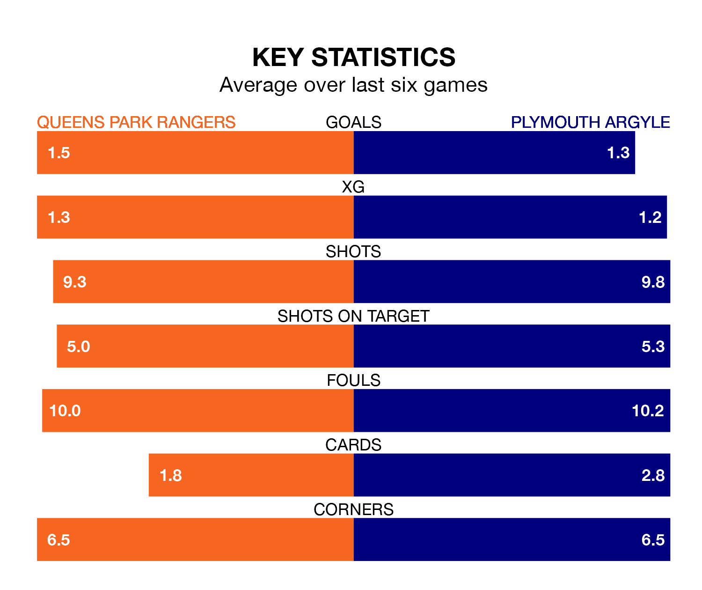

Struggling Queens Park Rangers face Plymouth Argyle at Loftus Road on Wednesday looking to build on a win in their last league outing.
After securing all three points with a 2-0 victory over Hull City on Saturday, QPR sit 22nd in the Championship.
They travel to play a Plymouth side 18th in the standings, who lost in their last match, 4-0 against Leicester City.
With 19 goals in 20 games so far this season, QPR are scoring at below the league average rate with 0.9 goals per game. And they are conceding more than average, letting in 30 goals at a rate of 1.5 per game.
Plymouth, meanwhile, are above average scorers, with 1.6 goals per game, compared to a league average of 1.4. They have also conceded 1.6 goals per game.
In Morgan Whittaker, Argyle have one of the league's sharpest shooters so far this season. He has notched eight goals in 20 appearances, to sit fifth in the scoring charts.
Rangers' top scorers, with three goals each, are Chris Willock, Lyndon Dykes and Kenneth Paal.
The hosts are in reasonable form in the Championship, with three wins and two draws from their last six games.
With two wins and a draw over that period, the Pilgrims' form is worse – they have taken seven points from 18, compared to QPR's 11.
Wednesday's match will be refereed by Tony Harrington, who has taken charge of two Championship games so far this season, issuing no red cards and booking 10 players. He has not awarded any penalties.
He is yet to oversee a match featuring either QPR or Plymouth this season.
